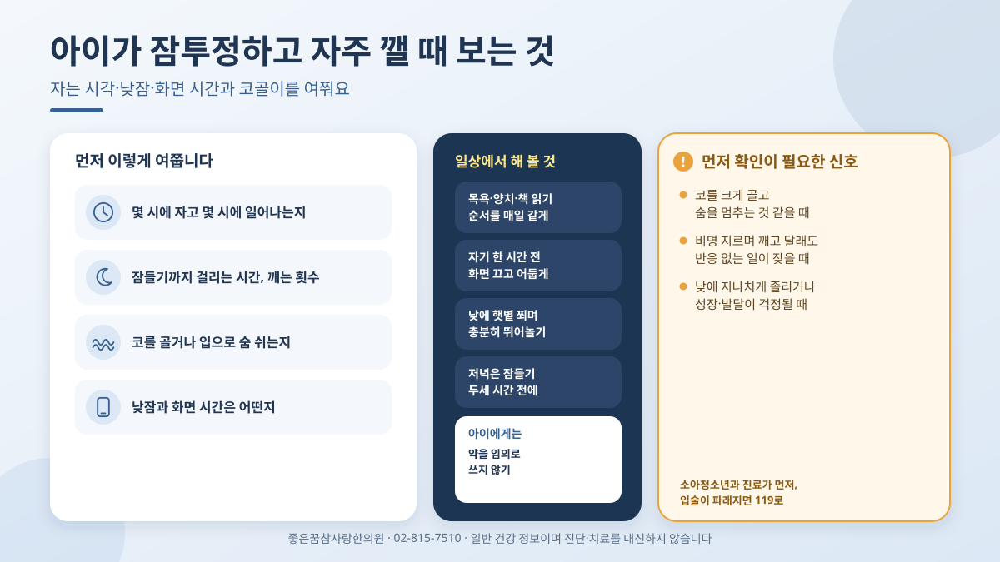

이종호 한의사 감수좋은꿈참사랑한의원 대표원장 (한의사 면허번호 19769)발행 2026-11-26 · 수정 2026-11-26
이 글의 차례
저녁 여덟 시 반, 아이를 데려와 밥을 먹이고 씻기면 시계는 벌써 아홉 시 반입니다. 불을 끄면 물 한 잔, 화장실, 책 한 권만 더. 아이가 잠들기 어렵고 자주 깬다면, 저는 밤보다 아침에 일어난 시각과 저녁 식사, 잠자리 순서, 코골이를 먼저 함께 살펴보자고 말씀드립니다.
잠자리 순서를 매일 같은 차례로 두는 것만으로 잠드는 시간이 달라지는 아이도 많습니다. 다만 거의 매일 코를 골고 입을 벌리고 자거나 숨이 멈추는 듯하다면 소아청소년과나 이비인후과 확인이 먼저입니다.
맞벌이 가정이라면 아이와 마주 앉는 시간이 잠들기 전 한두 시간뿐인 날도 많지요. 그 시간이 매일 실랑이로 끝나면 보호자 마음이 먼저 지칩니다. 재우다 같이 잠들어 버리고, 새벽 울음에 또 깨는 밤이 이어지면 내가 뭘 잘못하고 있나 싶어지기도 합니다.
진료실에서 이런 말씀을 자주 듣습니다. 잘못하고 계신 게 아닙니다. 아이의 잠은 집의 저녁 리듬과 낮의 활동, 몸의 사정이 함께 만드는 일이라 한 가지만 바꿔서는 잘 움직이지 않을 때가 많습니다. 그래서 하나씩 같이 짚어 보려고 합니다.
왜 아이는 졸릴수록 더 안 자려고 할까요
아이들은 졸리면 처지기보다 오히려 더 들뜨는 경우가 많습니다. 저녁에 갑자기 소파 위를 뛰어다니고, 작은 일에 울음이 터지고, 눕히면 다시 일어나지요. 어른 눈에는 덜 피곤해 보여도 사실은 잠들 때를 지나 버린 모습일 때가 있습니다.
그래서 늦게 재우면 지쳐서 금방 잘 거라는 기대는 자주 빗나갑니다. 아이들은 늦게 자도 아침에는 비슷한 시각에 깨는 경우가 많아, 모자란 잠을 안은 채 다음 날 저녁을 맞습니다. 그 저녁은 잠투정이 더 커지기 쉽고요.
잠이 들어오는 길은 사실 아침에 열립니다. 일어나는 시각이 들쭉날쭉하면 몸이 언제 졸려야 할지 헷갈리고, 낮에 햇볕을 보며 뛰어논 시간이 적으면 밤에 졸음이 약합니다.
제가 잠 때문에 오신 분께 끼니 시간과 저녁 산책, 따뜻한 물에 씻는 시간부터 권하는 것도 몸이 하루의 흐름을 기억하게 하려는 뜻입니다. 아이도 다르지 않습니다.
낮잠도 마찬가지입니다. 나이에 맞는 낮잠을 갑자기 끊으면 저녁에 지나치게 지쳐 더 보채기 쉽고, 늦은 오후까지 길게 자면 밤잠이 뒤로 밀립니다. 어린이집에 다닌다면 낮잠이 몇 시에 끝나는지 한번 여쭤봐 주세요.
흔히 안내하는 기준은 유치원 나이 아이가 낮잠을 포함해 하루 10~13시간, 초등학생이 9~12시간 정도입니다. 다만 숫자보다 아침에 스스로 일어나는지, 낮에 짜증과 졸음이 덜한지를 함께 보는 편이 그 아이에게 맞는 잠을 찾기 쉽습니다.
왜 밤중에 깨서 다시 잠들지 못할까요
아이들은 밤사이 잠이 얕아지는 순간을 여러 번 지납니다. 잠깐 뒤척이다 다시 이어 자는 것이 보통인데, 잠들 때와 깼을 때 곁의 모습이 다르면 그 순간 완전히 깨서 보호자를 찾기도 합니다. 품에 안겨 잠들었다가 혼자 누운 자리에서 깨는 경우가 그렇습니다.
몸의 불편도 잠을 끊습니다. 코가 막혀 입으로 숨을 쉬면 잠이 얕아지고, 늦은 저녁으로 배가 무겁거나 반대로 너무 배가 고파도 깨기 쉽습니다. 변비로 배가 더부룩한 아이도 잠이 얕을 수 있지요.
방이 덥고 이불이 두꺼우면 땀을 흘리며 이불을 걷어차다 깨는 아이도 있습니다. 저녁에 마신 콜라나 아이스티, 초콜릿에도 카페인이 들어 있다는 점을 기억해 두세요.
마음의 일도 밤에 나옵니다. 동생이 생기거나, 어린이집을 옮기거나, 입학과 이사처럼 낮에 긴장할 일이 있었다면 잠자리에서 보호자를 더 찾는 아이들이 있습니다. 이럴 때는 밤 습관만 고치기보다 낮에 보호자와 온전히 함께하는 시간을 조금 늘리는 쪽을 같이 생각해 봅니다.
잠꼬대와 야경증, 무엇을 지켜볼까요
잠든 지 한두 시간쯤 지나 갑자기 소리를 지르며 울고, 눈을 뜨고 있는데도 달래지지 않는 밤이 있습니다. 다음 날 아침 아이는 아무것도 기억하지 못하지요. 깊은 잠에서 반쯤 깬 상태로 나타나는 모습으로, 어린 나이에 흔하고 자라면서 줄어드는 경우가 많습니다.
이럴 때 흔들어 깨우면 오히려 더 놀라고 길어지기도 합니다. 불을 환하게 켜지 말고, 부딪힐 만한 물건을 치운 뒤 다치지 않게 곁에서 조용히 지켜봐 주세요. 몇 분 안에 다시 잠드는 경우가 많습니다.
잠이 모자랐던 날, 열이 났던 날, 낮에 많이 흥분했던 날 더 잦다는 이야기도 있습니다. 그래서 이런 밤이 있었다면 그날 낮에 무슨 일이 있었는지 한 줄 적어 두시면 좋습니다.
새벽 무렵 무서운 꿈을 꾸고 깨서 꿈 이야기를 한다면 악몽에 가깝고, 안아서 달래 주시면 됩니다. 반면 몸이 뻣뻣하게 굳거나 팔다리를 같은 박자로 떨고, 깬 뒤에도 한참 멍하고 처진다면 야경증이 아니라 경련일 수 있습니다.
코를 골고 숨이 자주 막히는 아이는 잠이 자주 끊기면서 이런 밤이 잦아지기도 합니다. 그래서 저는 밤에 우는 일로 오신 분께도 코골이를 꼭 여쭙습니다. 자세한 내용은 아이가 자면서 코를 골고 입으로 숨 쉴 때는 어떻게 살피나요?에 정리해 두었습니다.
먼저 이렇게 여쭙니다
처음 오시면 보호자께 이것부터 여쭙고, 말할 수 있는 나이라면 밤에 깨면 어떤 기분인지 아이에게도 직접 묻습니다.
- 아침에 몇 시에 일어나고 밤에는 몇 시에 잠드나요? 주말에는 어떤가요?
- 불을 끄고 잠들기까지 얼마나 걸리고, 밤에 몇 번 깨나요?
- 깼을 때 스스로 다시 자나요, 보호자를 찾나요?
- 코를 골거나 입을 벌리고 자나요? 숨이 멈추는 듯한 때가 있나요?
- 낮잠과 화면 보는 시간, 저녁 먹는 시각은 어떤가요?
- 요즘 아이 생활에 바뀐 일이 있나요?
상황별로 이렇게 짚어 봅니다
예를 들어 맞벌이로 저녁 여덟 시가 넘어야 가족이 모이는 집이라면, 아이가 보호자와 더 있고 싶어 잠을 미루는 경우가 많습니다. 이럴 때는 불 끄기 전 아이와 온전히 마주하는 10~15분을 순서 안에 넣어 두는 것부터 이야기합니다.
예를 들어 어린이집에서 오후 늦게까지 낮잠을 자고 오는 아이라면, 밤 열한 시에 말똥말똥한 것이 이상한 일이 아닙니다. 선생님과 낮잠 끝나는 시각을 상의하고, 하원 뒤 바깥에서 30분쯤 걷거나 뛰는 시간을 만들어 보시길 권합니다.
예를 들어 숙제를 마치고 휴대전화를 보다 늦게 잠드는 초등학생이라면, 숙제 끝나는 시각과 화면 끄는 시각을 함께 정합니다. 화면 습관을 바꾸는 순서는 아이가 휴대폰을 보다가 밤늦게 잠들 때는 어떻게 바꿔 갈 수 있을까요?를 참고해 주세요.
재우려 애쓸수록 멀어질 때
동네 어르신들께 염증 이야기를 하며, 한의학은 억지로 눌러 없애기보다 몸이 스스로 가라앉게 다스리는 쪽을 생각한다고 말씀드린 적이 있습니다. 어르신들 말로 하면 우는 아이를 윽박지르지 않고 달래는 것과 비슷하다고요. 아이의 잠이 꼭 그렇습니다.
빨리 자라는 말이 커질수록 잠자리는 긴장하는 자리가 됩니다. 잠은 재우는 일이라기보다 잠이 스스로 찾아오도록 길을 닦아 두는 일에 가깝습니다. 불 끄는 시각과 순서는 보호자가 정하고, 언제 잠이 드는지는 아이 몸에 조금 맡겨 두셔도 됩니다.
저는 큰 목표를 잘 드리지 않습니다. 해낼 수 있는 만큼을 함께 정합니다. 못 지킨 날이 생겨도 스스로를 탓하지 마시고 다음 날 다시 하시면 됩니다. 보호자가 지치면 순서도 금방 무너지니까요.
일상에서 먼저 해 볼 수 있는 것
오늘 밤부터 다 바꾸려 하지 마시고, 아래에서 지킬 수 있는 것 한두 가지만 골라 2~3주 이어 가 보세요.
- 아침에 일어나는 시각부터 매일 같게 맞추고, 일어나면 커튼을 열어 햇빛 보기
- 저녁 식사는 잠들기 2~3시간 전에 마치고, 저녁에는 초콜릿·콜라·아이스티 피하기
- 잠들기 한두 시간 전 따뜻한 물로 씻기고, 1시간 전에는 화면 끄기
- 씻기, 양치, 책 한 권, 불 끄기처럼 짧은 순서를 매일 같은 차례로 반복하기
- 방은 어둡고 조용하게, 덥지 않게 두고 이불은 가볍게 덮기
- 밤에 깨면 불을 켜지 말고 짧고 같은 말로 달래기
순서는 짧을수록 지키기 쉽습니다. 30분 안에 끝나는 서너 단계면 충분합니다. 매일 같은 차례로 반복되면 아이 몸이 그 순서를 이제 잘 시간이라는 신호로 받아들이기 시작합니다. 따뜻한 물에 씻는 시간은 하루의 긴장을 내려놓는 신호로 쓰기 좋습니다.
저녁을 거르면 잘 잘 거라 생각하실 수 있지만, 너무 배가 고프면 오히려 잠이 깨기도 합니다. 저녁이 늦어질 수밖에 없는 날은 양을 줄이고 소화가 편한 것으로 차려 주세요.
잠드는 시각을 한 번에 한 시간씩 당기면 아이도 보호자도 힘듭니다. 며칠마다 15분씩 당기는 방법은 키 걱정에 아이를 일찍 재우려는데 잠자리에서 계속 버틸 때는 어떻게 살피나요?에 적어 두었습니다.
보호자의 잠도 챙기셔야 합니다. 밤에 깨는 아이를 한 사람이 매일 맡으면 오래 버티기 어렵습니다. 요일을 나눠 번갈아 맡거나 주말 하루는 한 분이 몰아서 쉬는 식으로, 집안에서 할 수 있는 만큼 나눠 보세요.
스스로 점검해 보세요
- 불을 끄고 잠들기까지 30분 넘게 걸리는 날이 일주일에 사흘 이상이다
- 밤에 두 번 넘게 깨서 보호자를 찾는 날이 잦다
- 평일과 주말의 일어나는 시각이 한 시간 넘게 차이 난다
- 잠들기 전 한 시간 안에 화면을 본다
- 감기가 아닐 때도 코를 골거나 입을 벌리고 잔다
- 아침에 깨우기 힘들고 낮에 짜증이나 졸음이 많다
- 잠든 지 한두 시간 뒤 울며 소리 지르는 밤이 일주일에 여러 번이다
다섯 번째와 마지막 항목에 해당하면 소아청소년과나 이비인후과 진료를 먼저 받아 보세요. 나머지는 진료 때 말씀해 주시면 상담이 한결 쉬워집니다.
한의원에서 함께 살필 수 있는 경우
- 소아청소년과에서 큰 이상은 없다고 들었지만 잠들기 어렵고 자주 깨는 일이 이어지는 경우
- 잠이 흔들리면서 입맛이 없고 배가 자주 아프다고 하거나 대변이 불편한 경우
- 자면서 땀을 많이 흘리거나 손발이 차서 몸의 온기를 함께 살피고 싶은 경우
- 생활 리듬을 바꿔 보았는데 무엇부터 다시 잡아야 할지 막막한 경우
첫 방문에는 보호자 이야기를 먼저 충분히 듣습니다. 잠든 시각과 깬 횟수, 낮잠과 저녁 시각, 대변과 입맛, 최근 생활의 변화를 여쭙고, 말할 수 있는 나이라면 아이에게도 밤에 깨면 어떤지 직접 묻습니다. 아이만의 말이 큰 단서가 될 때가 많습니다.
그다음 모든 분께 그렇듯 아이에게도 맥을 짚습니다. 필요하다고 판단되면 혀를 보고, 배를 만져 소화와 배의 긴장을 살핍니다. 무엇을 왜 하는지는 아이 눈높이에서 먼저 말해 주고, 무서워하면 억지로 하지 않습니다.
침이나 한약 상담은 아이의 나이와 체중, 상태에 맞춰 신중하게 정합니다. 첫날은 집에서 바꿔 볼 잠자리 순서만 정하고 가는 경우도 있습니다. 귀가 전에는 이번 주에 해 볼 것 한두 가지를 함께 정해 드립니다.
이렇게 기록해 오시면 상담이 쉬워집니다
- 일주일 동안 일어난 시각, 불 끈 시각, 잠든 시각, 밤에 깬 횟수
- 낮잠 시간과 저녁 먹은 시각, 잠들기 전 한 시간 동안 한 일
- 코골이, 숨 멈춤, 울며 깬 밤이 있었다면 그 날짜와 시각
- 대변 본 날과 모양, 자면서 땀을 흘린 날
- 소아청소년과·이비인후과 진료 기록과 먹고 있는 약·영양제
코골이나 밤에 울며 깨는 모습은 말로 설명하기보다 짧은 영상이 훨씬 정확합니다. 얼굴과 가슴이 보이게 1~2분쯤 찍어 오시면 숨소리와 가슴 움직임을 함께 볼 수 있습니다.
이런 증상은 먼저 확인이 필요합니다
- 자는 동안 숨이 멈추거나, 숨쉬기 힘들어하며 입술이 파래지는 경우
- 열이 높으면서 축 처져 깨워도 반응이 약하거나, 경련을 한 경우
이런 신호가 있으면 한의원보다 가까운 병원이나 응급실을 먼저 찾으세요.
다음에 오시면
아이를 재우는 일은 매일 밤 처음부터 다시 시작하는 일이라 보호자도 지칩니다. 한 번에 다 바꾸지 않아도 됩니다. 아침에 일어나는 시각 하나, 불 끄기 전 15분 하나처럼 작은 것부터 붙들어 보세요.
다음에 오시면 저는 그사이 아이가 몇 시에 일어났는지, 잠자리 순서 가운데 무엇이 가장 지키기 어려웠는지부터 여쭙겠습니다. 지키기 어려웠던 사정을 들어야 다음 순서를 함께 고칠 수 있으니까요.

여쭙는 것
- 아침에 몇 시에 일어나고 밤에는 몇 시에 잠드나요? 주말에는 어떤가요?
- 불을 끄고 잠들기까지 얼마나 걸리고, 밤에 몇 번 깨나요?
- 깼을 때 스스로 다시 자나요, 보호자를 찾나요?
생활에서 해 볼 것
- 아침에 일어나는 시각부터 매일 같게 맞추고, 일어나면 커튼을 열어 햇빛 보기
- 저녁 식사는 잠들기 2~3시간 전에 마치고, 저녁에는 초콜릿·콜라·아이스티 피하기
- 잠들기 한두 시간 전 따뜻한 물로 씻기고, 1시간 전에는 화면 끄기
한의원에서 함께 살필 것
- 소아청소년과에서 큰 이상은 없다고 들었지만 잠들기 어렵고 자주 깨는 일이 이어지는 경우
- 잠이 흔들리면서 입맛이 없고 배가 자주 아프다고 하거나 대변이 불편한 경우
- 자면서 땀을 많이 흘리거나 손발이 차서 몸의 온기를 함께 살피고 싶은 경우
먼저 확인이 필요한 신호
- 자는 동안 숨이 멈추거나, 숨쉬기 힘들어하며 입술이 파래지는 경우
- 열이 높으면서 축 처져 깨워도 반응이 약하거나, 경련을 한 경우
한눈에 보는 표
| 구분 | 핵심 |
|---|---|
| 여쭙는 것 | 아침에 몇 시에 일어나고 밤에는 몇 시에 잠드나요? 주말에는 어떤가요? 불을 끄고 잠들기까지 얼마나 걸리고, 밤에 몇 번 깨나요? |
| 생활에서 해 볼 것 | 아침에 일어나는 시각부터 매일 같게 맞추고, 일어나면 커튼을 열어 햇빛 보기 저녁 식사는 잠들기 2~3시간 전에 마치고, 저녁에는 초콜릿·콜라·아이스티 피하기 |
| 한의원에서 함께 살필 것 | 소아청소년과에서 큰 이상은 없다고 들었지만 잠들기 어렵고 자주 깨는 일이 이어지는 경우 잠이 흔들리면서 입맛이 없고 배가 자주 아프다고 하거나 대변이 불편한 경우 |
| 먼저 확인이 필요한 신호 | 자는 동안 숨이 멈추거나, 숨쉬기 힘들어하며 입술이 파래지는 경우 열이 높으면서 축 처져 깨워도 반응이 약하거나, 경련을 한 경우 |
자주 묻는 질문
잠투정은 몇 살쯤 줄어드나요?
아이마다 다릅니다. 나이보다 하루 리듬과 잠자리 순서가 자리 잡히는지에 따라 달라지는 경우가 많아, 2~3주 같은 방식으로 이어 가며 기록을 함께 봅니다.
자다가 울며 소리를 지르는데 깨워야 하나요?
완전히 깨지 않은 상태로 우는 경우가 많아 흔들어 깨우기보다 다치지 않게 곁에서 지켜봐 주세요. 일주일에 여러 번 되풀이되면 소아청소년과 진료를 먼저 받아 보세요.
아이에게 잠 오는 약을 먹여도 되나요?
아이에게는 어떤 약도 임의로 먹이지 마시고 소아청소년과 의사와 먼저 상의해 주세요. 한약 상담도 진찰 뒤 나이와 체중, 상태를 살펴 신중하게 정합니다.
평일 저녁에 아이와 함께 가도 되나요?
평일은 09:30~20:00(점심 13:00~14:00), 토·일·공휴일은 09:30~15:00(점심시간 없음) 진료합니다. 아이와 함께라면 대기 상황을 방문 전 02-815-7510으로 확인해 주세요.
좋은꿈참사랑한의원은 재진 때 지난번 이야기부터 이어서 여쭙니다. 진료시간과 예약은 오시는 길에서 확인하세요.
어디서 상담받을 수 있나요?
좋은꿈참사랑한의원은 서울 동작구 만양로2길 2 신성빌딩 3층·5층(서울 동작구 상도동, 7호선 상도역 3번 출구 근처)에 있습니다. 한의사 3명(이종호 대표원장, 조영기 수석진료원장, 정원영 진료원장)이 진료합니다. 진료시간은 평일 09:30~20:00(점심 13:00~14:00), 토·일·공휴일 09:30~15:00이며, 방문 전 전화로 확인을 권합니다. 예약은 네이버 예약, 카카오톡 상담, 전화 02-815-7510로 받습니다.
이 글은 일반적인 건강 정보이며 개인의 진단이나 치료를 대신하지 않습니다. 증상이 있거나 복용 중인 약이 있다면 진료를 통해 확인하세요. 치료 효과는 개인마다 다를 수 있습니다.
작성 기준: 일반적으로 알려져 있는 건강 정보를 참고해 정리했습니다(대표원장 감수). 증상 기록은 1~2주 동안 하루 1회, 비슷한 시간에 적어 오시면 지난 상태와 비교하기 쉽습니다.